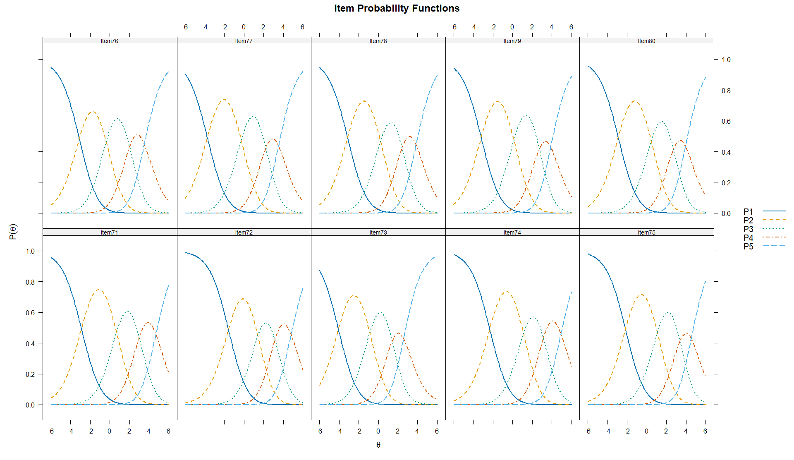
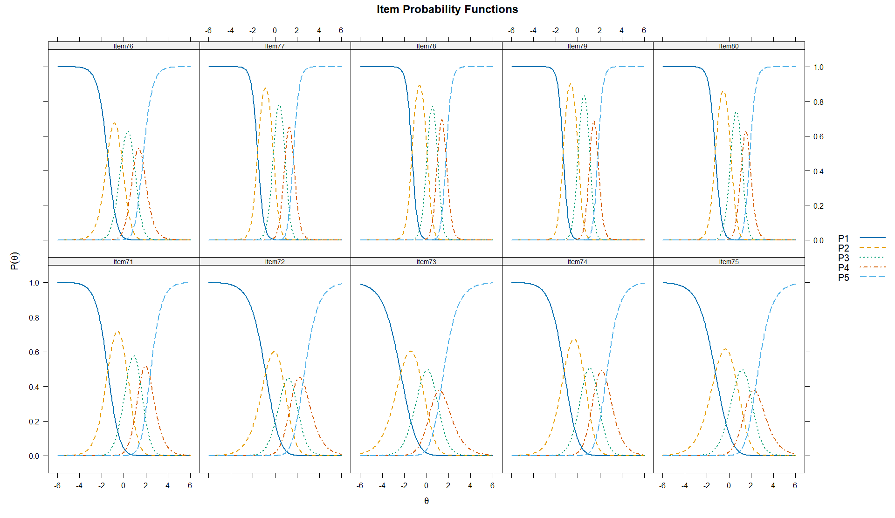
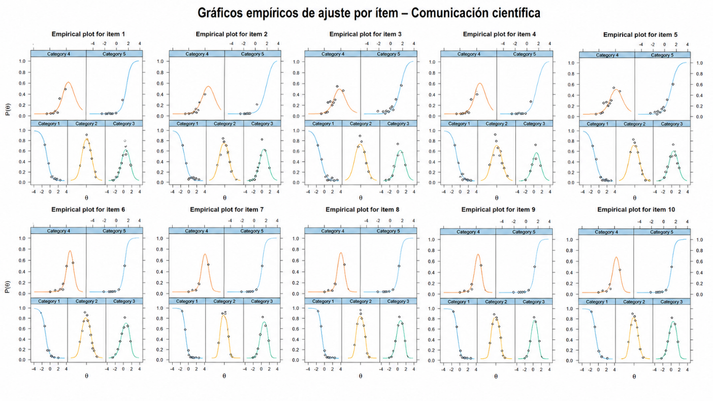
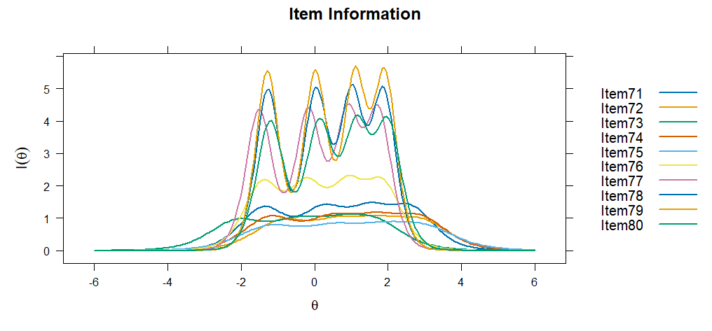
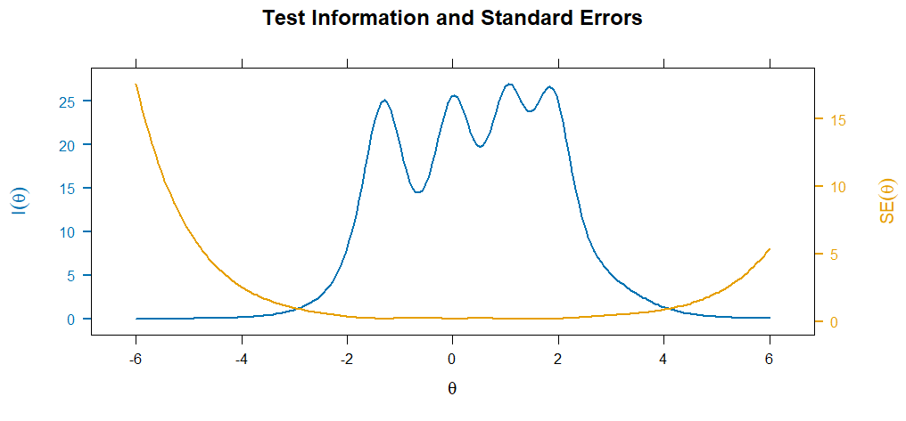
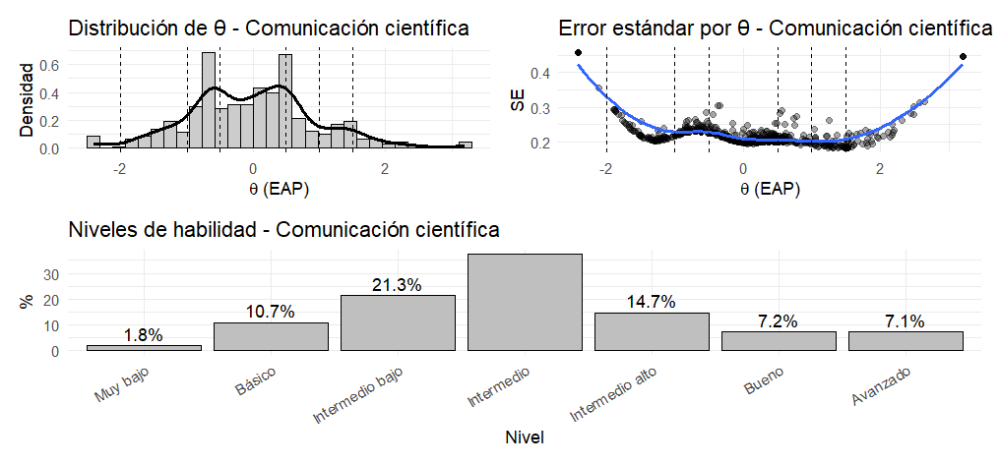
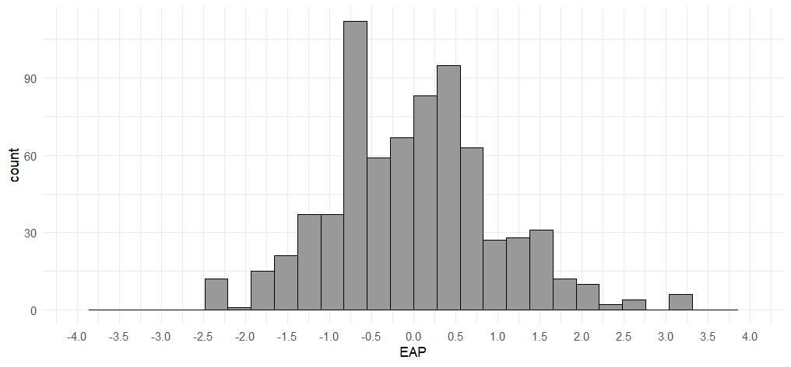
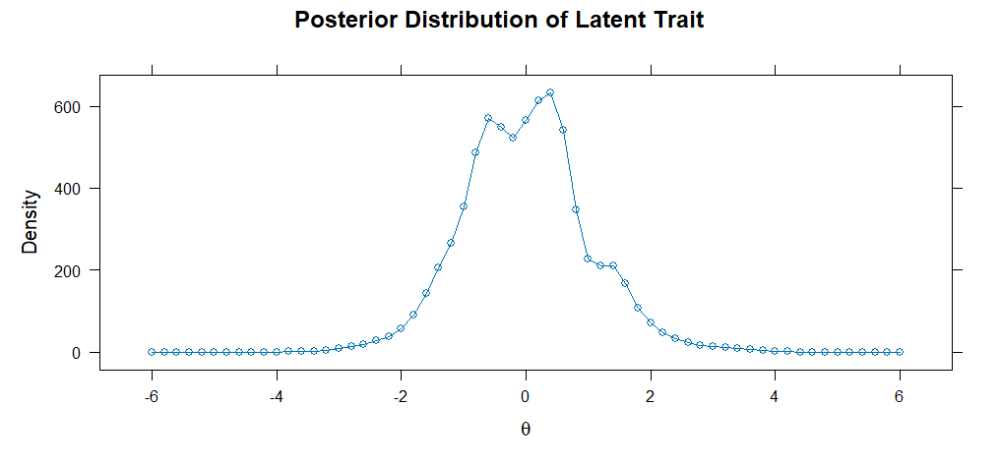
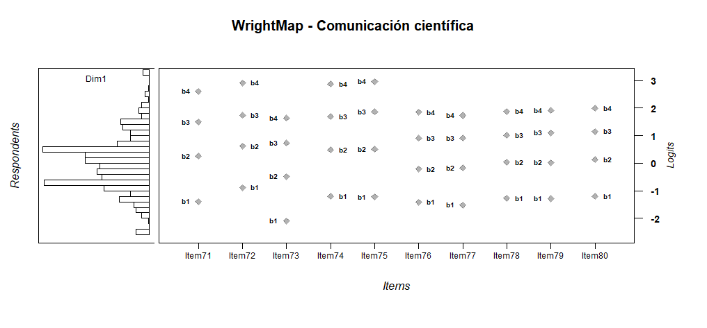
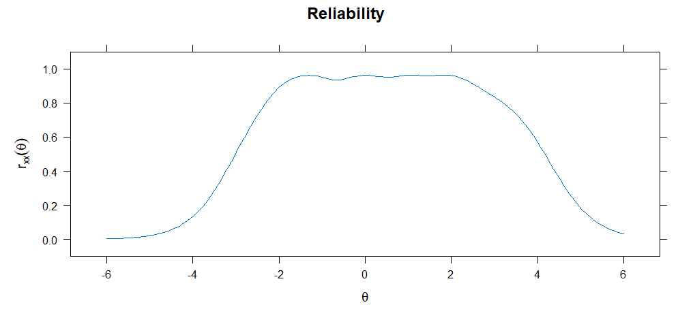

Modelo de Crédito Parcial
Estimación de umbrales del PCM
Los parámetros del PCM para el constructo Comunicación científica muestran un funcionamiento ordinal adecuado de las categorías de respuesta. Como corresponde al modelo PCM, el parámetro de discriminación se mantiene fijo en a = 1 para todos los ítems, por lo que la interpretación se centra en la localización de los umbrales. En todos los reactivos, los umbrales se ordenan progresivamente (b1 < b2 < b3 < b4), lo que indica que las categorías aumentan conforme se incrementa el nivel del rasgo latente. Los primeros umbrales (b1) se ubican en niveles bajos del continuo, especialmente en Item73 e Item77, lo que sugiere que el paso desde la categoría inicial hacia niveles superiores ocurre desde niveles relativamente bajos de habilidad. Los umbrales intermedios (b2 y b3) cubren zonas bajas-medias, medias y medio-altas, mientras que los umbrales superiores (b4) se localizan en niveles altos, sobre todo en Item72, Item74, Item71 e Item75. En conjunto, el PCM sugiere un funcionamiento ordinal coherente de los ítems y una cobertura amplia del constructo Comunicación científica, desde niveles bajos hasta niveles altos del rasgo latente.
| a | b1 | b2 | b3 | b4 | Item |
|---|---|---|---|---|---|
| 1 | -2.887 | 0.698 | 3.000 | 4.701 | Item71 |
| 1 | -1.586 | 1.415 | 3.152 | 4.798 | Item72 |
| 1 | -4.063 | -0.860 | 1.425 | 2.576 | Item73 |
| 1 | -2.331 | 1.125 | 3.149 | 4.927 | Item74 |
| 1 | -2.177 | 1.079 | 3.383 | 4.521 | Item75 |
| 1 | -3.107 | -0.364 | 2.020 | 3.518 | Item76 |
| 1 | -3.748 | -0.286 | 2.233 | 3.518 | Item77 |
| 1 | -3.139 | 0.233 | 2.426 | 3.846 | Item78 |
| 1 | -3.197 | 0.140 | 2.735 | 3.890 | Item79 |
| 1 | -2.916 | 0.458 | 2.718 | 3.940 | Item80 |
Las CCI del PCM para el constructo Comunicación científica muestran un funcionamiento ordinal progresivo de las categorías de respuesta. En general, la categoría P1 predomina en niveles bajos de θ y disminuye conforme aumenta el rasgo latente; las categorías P2 y P3 alcanzan sus mayores probabilidades en niveles bajos-medios y medios; mientras que las categorías P4 y P5 se activan principalmente en niveles medio-altos y altos. Este patrón indica que las categorías se organizan de manera coherente conforme aumenta la habilidad latente en Comunicación científica. Algunos ítems, como Item73, parecen cubrir con mayor claridad niveles más bajos del constructo, mientras que ítems como Item71, Item72, Item74 y Item75 desplazan sus categorías superiores hacia niveles más altos, lo que sugiere mayor exigencia para seleccionar las respuestas máximas. En conjunto, las curvas respaldan el funcionamiento ordinal de los ítems y muestran una cobertura amplia del constructo, aunque las categorías superiores representan niveles más demandantes de habilidad latente.

Retrotraducción factorial del PCM
La retrotraducción factorial del PCM para el constructo Comunicación científica mostró comunalidades elevadas y homogéneas en todos los ítems (h² = .908). Esto indica que, bajo este modelo, una proporción importante de la varianza de cada reactivo es explicada por el factor latente. No obstante, este resultado debe interpretarse con cautela, ya que en el PCM el parámetro de discriminación se fija en a = 1 para todos los ítems, lo que tiende a producir valores homogéneos de carga o comunalidad. Por tanto, aunque estos resultados sugieren una relación fuerte y consistente de los reactivos con el constructo Comunicación científica, conviene complementar esta evidencia con modelos más flexibles, como el GPCM o el GRM, donde las discriminaciones pueden variar entre ítems.
Modelo de Crédito Parcial Generalizado
Estimación de parámetros del GPCM
Los parámetros del GPCM para el constructo Comunicación científica muestran discriminaciones diferenciadas entre los ítems (a = 1.222–4.278), lo que indica que algunos reactivos distinguen con mayor precisión entre participantes con distintos niveles del rasgo latente. Los ítems con mayor discriminación fueron Item79 (a = 4.278), Item78 (a = 4.038), Item77 (a = 3.693) e Item80 (a = 3.534), por lo que parecen aportar mayor precisión al modelo. En un nivel intermedio se ubicó Item76 (a = 2.208) y, con discriminaciones más moderadas, Item71 (a = 1.825), Item74 (a = 1.548), Item72 (a = 1.369), Item75 (a = 1.260) e Item73 (a = 1.222). Los umbrales se ordenan progresivamente en todos los reactivos (b1 < b2 < b3 < b4), lo que respalda el funcionamiento ordinal de las categorías de respuesta. En conjunto, el GPCM sugiere un funcionamiento adecuado de los ítems, aunque con mayor fuerza discriminativa en los reactivos 77 a 80, los cuales parecen representar con mayor precisión el continuo latente de Comunicación científica.
| a | b1 | b2 | b3 | b4 | Item |
|---|---|---|---|---|---|
| 1.825 | -1.444 | 0.361 | 1.502 | 2.364 | Item71 |
| 1.369 | -0.851 | 0.828 | 1.685 | 2.527 | Item72 |
| 1.222 | -2.321 | -0.448 | 0.867 | 1.286 | Item73 |
| 1.548 | -1.233 | 0.628 | 1.642 | 2.557 | Item74 |
| 1.260 | -1.235 | 0.663 | 1.932 | 2.352 | Item75 |
| 2.208 | -1.469 | -0.175 | 0.958 | 1.705 | Item76 |
| 3.693 | -1.577 | -0.141 | 0.932 | 1.648 | Item77 |
| 4.038 | -1.310 | 0.074 | 1.023 | 1.777 | Item78 |
| 4.278 | -1.323 | 0.047 | 1.122 | 1.814 | Item79 |
| 3.534 | -1.245 | 0.177 | 1.169 | 1.855 | Item80 |
Las CCI del GPCM para el constructo Comunicación científica muestran un funcionamiento ordinal adecuado de las categorías de respuesta. En todos los ítems, la categoría P1 predomina en niveles bajos de θ; las categorías P2, P3 y P4 se activan de manera progresiva en zonas bajas-medias, medias y medio-altas; y la categoría P5 alcanza mayor probabilidad en niveles altos del continuo. Las curvas son más pronunciadas y estrechas en los ítems 77, 78, 79 y 80, lo que coincide con sus mayores valores de discriminación y sugiere una mejor capacidad para diferenciar participantes con niveles cercanos de habilidad. En cambio, los ítems 72, 73 y 75 presentan curvas más amplias, coherentes con discriminaciones más moderadas. En conjunto, las CCI respaldan un funcionamiento sólido del constructo Comunicación científica bajo el GPCM, con categorías ordenadas y una medición más precisa en los ítems finales del bloque.

Retrotraducción factorial del Modelo GPC
La retrotraducción factorial del GPCM para el constructo Comunicación científica mostró cargas factoriales elevadas en todos los ítems (λ = .882–.989), así como comunalidades adecuadas a muy altas (h² = .778–.977). Esto indica que los reactivos se asocian de manera consistente con el factor latente y que una proporción importante de su varianza es explicada por el constructo. Los ítems con mayor representación del rasgo fueron Item79 (λ = .989; h² = .977), Item78 (λ = .987; h² = .975), Item77 (λ = .985; h² = .970) e Item80 (λ = .983; h² = .967), lo que coincide con sus mayores parámetros de discriminación. En cambio, Item73 (λ = .882; h² = .778), Item75 (λ = .888; h² = .789) e Item72 (λ = .903; h² = .815) presentaron los valores más bajos del conjunto, aunque todavía se mantienen en niveles aceptables. Además, la proporción de varianza explicada fue elevada (89.3%), lo que respalda una estructura predominantemente unidimensional para el constructo Comunicación científica bajo el GPCM.
| Item | F1 | h2 |
|---|---|---|
| Item71 | 0.942 | 0.887 |
| Item72 | 0.903 | 0.815 |
| Item73 | 0.882 | 0.778 |
| Item74 | 0.922 | 0.849 |
| Item75 | 0.888 | 0.789 |
| Item76 | 0.959 | 0.920 |
| Item77 | 0.985 | 0.970 |
| Item78 | 0.987 | 0.975 |
| Item79 | 0.989 | 0.977 |
| Item80 | 0.983 | 0.967 |
Modelo de Respuesta Graduada
Estimación de parámetros del GRM
Los parámetros del GRM para el constructo Comunicación científica muestran discriminaciones diferenciadas entre los ítems (a = 1.742–4.706). Los reactivos con mayor capacidad discriminativa fueron Item79 (a = 4.706), Item78 (a = 4.459), Item77 (a = 4.175) e Item80 (a = 4.000), lo que indica que estos ítems son los más precisos para diferenciar participantes con niveles cercanos del rasgo latente. En contraste, Item75 (a = 1.742), Item72 (a = 1.927), Item73 (a = 1.938) e Item74 (a = 2.038) presentan discriminaciones más moderadas, aunque todavía funcionales. Los umbrales se ordenan progresivamente en todos los ítems (b1 < b2 < b3 < b4), lo que respalda el funcionamiento ordinal de las categorías de respuesta. En general, los primeros umbrales se ubican en niveles bajos de θ, mientras que los umbrales superiores se desplazan hacia niveles medio-altos y altos. En conjunto, el GRM evidencia un funcionamiento adecuado del constructo Comunicación científica, con categorías ordenadas y mayor fuerza discriminativa en los ítems finales del bloque, especialmente del Item77 al Item80.
| a | b1 | b2 | b3 | b4 | Item |
|---|---|---|---|---|---|
| 2.312 | -1.386 | 0.253 | 1.496 | 2.608 | Item71 |
| 1.927 | -0.890 | 0.614 | 1.741 | 2.909 | Item72 |
| 1.938 | -2.096 | -0.481 | 0.730 | 1.631 | Item73 |
| 2.038 | -1.201 | 0.484 | 1.685 | 2.864 | Item74 |
| 1.742 | -1.222 | 0.500 | 1.864 | 2.958 | Item75 |
| 2.913 | -1.412 | -0.216 | 0.906 | 1.844 | Item76 |
| 4.175 | -1.511 | -0.169 | 0.903 | 1.731 | Item77 |
| 4.459 | -1.268 | 0.038 | 1.012 | 1.875 | Item78 |
| 4.706 | -1.285 | 0.021 | 1.102 | 1.909 | Item79 |
| 4.000 | -1.205 | 0.132 | 1.148 | 1.989 | Item80 |
Las CCI del GRM para el constructo Comunicación científica muestran un funcionamiento ordinal adecuado de las categorías de respuesta. En todos los ítems, la categoría P1 predomina en niveles bajos de θ y disminuye conforme aumenta el rasgo latente; las categorías P2, P3 y P4 se activan de forma secuencial en zonas bajas-medias, medias y medio-altas; y la categoría P5 se vuelve más probable en niveles altos del continuo. Las curvas son más estrechas y pronunciadas en los ítems 77, 78, 79 y 80, lo que coincide con sus mayores parámetros de discriminación y sugiere mayor precisión para diferenciar participantes. En cambio, los ítems 72, 73 y 75 presentan curvas más amplias, coherentes con discriminaciones más moderadas. En conjunto, las curvas respaldan un funcionamiento sólido del constructo Comunicación científica bajo el GRM, con categorías ordenadas y mayor capacidad discriminativa en los ítems finales del bloque.
Retrotraducción factorial del GRM
La retrotraducción factorial del GRM para el constructo Comunicación científica mostró cargas factoriales adecuadas a muy elevadas en todos los ítems (λ = .715–.940), así como comunalidades aceptables a altas (h² = .512–.884). Esto indica que todos los reactivos se relacionan de manera relevante con el factor latente, aunque con distinta intensidad. Los ítems con mayor representación del constructo fueron Item79 (λ = .940; h² = .884), Item78 (λ = .934; h² = .873), Item77 (λ = .926; h² = .857) e Item80 (λ = .920; h² = .847), lo que coincide con sus mayores parámetros de discriminación. En contraste, Item75 (λ = .715; h² = .512), Item72 (λ = .750; h² = .562) e Item73 (λ = .751; h² = .565) presentaron los valores más bajos, aunque todavía dentro de rangos interpretables. La proporción de varianza explicada fue de 70.8%, lo que respalda una estructura predominantemente unidimensional para el constructo Comunicación científica, con mayor fuerza psicométrica en los ítems finales del bloque.
| Item | F1 | h2 |
|---|---|---|
| Item71 | 0.805 | 0.649 |
| Item72 | 0.750 | 0.562 |
| Item73 | 0.751 | 0.565 |
| Item74 | 0.768 | 0.589 |
| Item75 | 0.715 | 0.512 |
| Item76 | 0.863 | 0.746 |
| Item77 | 0.926 | 0.857 |
| Item78 | 0.934 | 0.873 |
| Item79 | 0.940 | 0.884 |
| Item80 | 0.920 | 0.847 |
Unidimensionalidad del constructo mediante AFC
La unidimensionalidad del constructo Comunicación científica se evaluó inicialmente mediante AFC ordinal con estimador WLSMV. En primer lugar, el SRMR = .086 se ubicó ligeramente por encima del punto de referencia convencional de .08, lo que sugiere que el modelo unifactorial presenta algunas discrepancias residuales y que la unidimensionalidad no es tan limpia como en otros constructos. No obstante, los índices incrementales escalados fueron adecuados (CFI = .962; TLI = .952), lo que indica que el modelo unidimensional mejora sustantivamente frente al modelo nulo. Las cargas factoriales estandarizadas fueron de moderadas-altas a muy altas (λ = .725–.937), con mayor fuerza en los ítems 77, 78, 79 y 80, mientras que los ítems 72, 73 y 75 mostraron las cargas más bajas, aunque todavía aceptables. En contraste, el RMSEA fue elevado en todas sus versiones, y los índices robustos (CFI = .789; TLI = .729) fueron menos favorables. En conjunto, los resultados apoyan una estructura predominantemente unidimensional para Comunicación científica, pero con señales de tensión residual que sugieren posible heterogeneidad interna o subcomponentes dentro del constructo.
Los índices de ajuste TRI para el constructo Comunicación científica muestran un ajuste más limitado que en otros constructos. El PCM presentó el peor ajuste residual (SRMSR = .097) y los criterios de información más altos, lo que sugiere que restringir la discriminación de todos los ítems a un mismo valor no representa adecuadamente los datos. El GPCM y el GRM mejoraron el ajuste residual (SRMSR = .083–.084) y presentaron mejores valores de CFI que el PCM, aunque estos indicadores se mantienen apenas en un rango aceptable o moderado (CFI = .906–.908; TLI = .879–.881). En los tres modelos, el RMSEA fue elevado, lo que indica tensión de ajuste y posible heterogeneidad interna del constructo. La comparación entre PCM y GPCM fue significativa (X² = 288.661, gl = 9, p < .001), lo que respalda la mejora al permitir discriminaciones diferenciadas. Finalmente, el GRM presentó los valores más bajos de AIC, SABIC y BIC, además del mayor LogLik, por lo que puede considerarse el modelo con mejor ajuste relativo; sin embargo, la evidencia global sugiere que Comunicación científica requiere una interpretación más cautelosa, ya que el ajuste unidimensional no es plenamente satisfactorio.
| Modelo | M2 | gl | p | RMSEA | IC 95% RMSEA | SRMSR | TLI | CFI | AIC | SABIC | BIC | LogLik |
|---|---|---|---|---|---|---|---|---|---|---|---|---|
| PCM | 1343.445 | 44 | .000 | .202 | [.193, .212] | .097 | .895 | .897 | 14694.47 | 14752.15 | 14882.34 | -7306.237 |
| GPCM | 1204.062 | 35 | .000 | .215 | [.205, .226] | .083 | .881 | .908 | 14423.81 | 14494.15 | 14652.92 | -7161.907 |
| GRM | 1221.600 | 35 | .000 | .217 | [.206, .227] | .084 | .879 | .906 | 14327.79 | 14398.12 | 14556.89 | -7113.894 |
Independencia local del modelo GRM
La independencia local del modelo GRM para el constructo Comunicación científica se evaluó mediante el estadístico LD de Chen y Thissen (1997) y el índice Q3 de Yen (1984). En el análisis LD, los valores de chi-cuadrado del triángulo inferior fueron elevados en varios pares, superando el criterio de referencia de 10.83, lo que sugiere presencia de dependencia local estadísticamente detectable. Asimismo, en el triángulo superior, varias correlaciones residuales estandarizadas o V de Cramer con signo superaron el criterio práctico de .20, por ejemplo en pares como Item71–Item72, Item72–Item75, Item76–Item77, Item77–Item79, Item78–Item80 e Item79–Item80. Sin embargo, al considerar también el criterio de Cohen, todos los valores se mantuvieron por debajo de |.30| (rango = -.275 a .269), por lo que la magnitud de estas asociaciones puede considerarse pequeña. Esto indica que el LD advierte dependencia residual puntual, pero no necesariamente de magnitud fuerte.
Por su parte, el índice Q3 mostró asociaciones residuales más relevantes en algunos pares, especialmente Item74–Item75 (Q3 = .406), Item74–Item78 (Q3 = -.390), Item75–Item78 (Q3 = -.365), Item72–Item75 (Q3 = .359), Item71–Item72 (Q3 = .336), Item76–Item79 (Q3 = -.330), Item76–Item80 (Q3 = -.325) e Item71–Item78 (Q3 = -.320). Estos valores superan el punto de referencia aproximado de |Q3| > .2236, por lo que sugieren dependencia local específica entre algunos reactivos. En conjunto, los resultados indican que la independencia local no se cumple de manera completamente limpia en Comunicación científica; no obstante, la evidencia parece concentrarse en pares específicos y puede reflejar contenido compartido o subcomponentes internos del constructo, más que un problema generalizado que justifique eliminar ítems automáticamente.
Ajuste al ítem del modelo GRM
El ajuste al ítem del modelo GRM para el constructo Comunicación científica mostró un funcionamiento globalmente aceptable, aunque con algunas señales puntuales de revisión. Los valores de infit oscilaron entre .834 y 1.006, mientras que los valores de outfit se ubicaron entre .763 y 1.028, por lo que, en general, se mantienen dentro de rangos interpretables y no sugieren desajuste severo. Los ítems 77, 78, 79 y 80 presentaron los valores más bajos de infit/outfit, especialmente el Item79 (outfit = .763; infit = .834), lo que sugiere respuestas más predecibles o menos variables de lo esperado por el modelo, posiblemente por su alta capacidad discriminativa. En cuanto al S_X2, la mayoría de los ítems resultó significativa; sin embargo, los valores de RMSEA.S_X2 fueron bajos en todos los casos (.023–.041), lo que indica que las discrepancias tienen una magnitud limitada. El estadístico X2* también fue significativo en la mayoría de los ítems, con excepción del Item78 (p = .099), por lo que debe interpretarse junto con los índices de magnitud y los valores de infit/outfit. En conjunto, los resultados sugieren que los ítems de Comunicación científica presentan un ajuste aceptable al GRM, con atención diagnóstica en los ítems 77 a 80, pero sin evidencia suficiente para justificar la eliminación automática de reactivos.
| item | Zh | outfit | z.outfit | infit | z.infit | S_X2 | df.S_X2 | RMSEA.S_X2 | p.S_X2 | X2_star | p.X2_star |
|---|---|---|---|---|---|---|---|---|---|---|---|
| Item71 | 1.158 | 0.895 | -1.688 | 0.948 | -0.843 | 77.528 | 43 | 0.033 | 0.000973186 | 83.142 | 0.0076 |
| Item72 | 1.118 | 0.884 | -1.740 | 0.945 | -0.879 | 117.252 | 55 | 0.040 | 2.12E-06 | 137.252 | 0.003 |
| Item73 | 0.823 | 1.028 | 0.465 | 1.006 | 0.121 | 130.980 | 60 | 0.041 | 3.36E-07 | 104.419 | 8.00E-04 |
| Item74 | 1.003 | 0.915 | -1.339 | 0.950 | -0.795 | 101.948 | 50 | 0.038 | 2.04E-05 | 48.730 | 0.0172 |
| Item75 | 0.948 | 0.902 | -1.558 | 0.941 | -0.944 | 96.345 | 56 | 0.032 | 0.000650216 | 69.696 | 0.0084 |
| Item76 | 1.535 | 0.929 | -1.015 | 0.962 | -0.625 | 67.907 | 44 | 0.027 | 0.011840614 | 95.875 | 0.0062 |
| Item77 | 2.401 | 0.821 | -1.913 | 0.872 | -2.095 | 47.368 | 34 | 0.023 | 0.063547599 | 69.223 | 0.0106 |
| Item78 | 2.500 | 0.805 | -1.771 | 0.845 | -2.559 | 49.972 | 31 | 0.029 | 0.016866465 | 16.931 | 0.0994 |
| Item79 | 2.582 | 0.763 | -2.118 | 0.834 | -2.718 | 47.489 | 31 | 0.027 | 0.029439291 | 44.428 | 0.0166 |
| Item80 | 2.265 | 0.817 | -1.959 | 0.856 | -2.413 | 52.684 | 35 | 0.026 | 0.027889869 | 45.972 | 0.0212 |
Los gráficos empíricos de ajuste por ítem para el constructo Comunicación científica muestran un ajuste visual aceptable entre las curvas estimadas por el GRM y las proporciones observadas. En general, los puntos empíricos se ubican cerca de las curvas teóricas en la mayoría de las categorías, lo que indica que el modelo reproduce razonablemente el patrón de respuesta de los participantes. Las categorías presentan un comportamiento ordinal esperado: la categoría 1 predomina en niveles bajos de θ, las categorías intermedias se concentran en zonas sucesivas del continuo y la categoría 5 aumenta en niveles altos de habilidad latente. No obstante, en algunos ítems se observan discrepancias puntuales, especialmente en categorías intermedias y superiores, donde ciertos puntos se alejan de la curva esperada. Esto coincide con los resultados cuantitativos previos, que mostraron un ajuste global aceptable pero no completamente limpio. En conjunto, la evidencia visual sugiere que los ítems de Comunicación científica funcionan de manera ordenada y coherente bajo el GRM, aunque con algunas señales de revisión en pares o categorías específicas, sin que ello implique eliminación automática de reactivos.

Ajuste por persona
El ajuste a la persona del modelo GRM para el constructo Comunicación científica mostró algunos casos con patrones de respuesta atípicos. Los participantes con mayor desajuste presentaron valores elevados de outfit e infit, junto con estadísticos Zh negativos, lo que indica respuestas menos consistentes con el patrón esperado por el modelo. En varios casos se observaron combinaciones poco uniformes, por ejemplo, respuestas bajas en algunos ítems y respuestas altas en otros, o cambios marcados entre reactivos cercanos. Sin embargo, este comportamiento no debe interpretarse automáticamente como error, falta de atención o invalidez de la respuesta. En este constructo, es plausible que los estudiantes dominen ciertos componentes de la comunicación científica —por ejemplo, aspectos vinculados con presentación, organización, escritura o difusión— y, al mismo tiempo, desconozcan otros. Por tanto, el desajuste a la persona debe entenderse principalmente como una señal de heterogeneidad en los perfiles de conocimiento, más que como un criterio directo de exclusión. En conjunto, los resultados sugieren que algunos participantes presentan trayectorias de respuesta diferenciadas dentro del constructo Comunicación científica, lo cual puede reflejar aprendizajes parciales o experiencias formativas desiguales.
Curva de información del ítem (IIF)
La curva de información del ítem para Comunicación científica muestra que los reactivos aportan mayor precisión en la zona baja-media, media y medio-alta del continuo latente, aproximadamente entre θ = -2 y θ = 2.5. Los ítems con mayor información son Item79 (a = 4.706), Item78 (a = 4.459), Item77 (a = 4.175) e Item80 (a = 4.000), lo que coincide con sus mayores parámetros de discriminación y con curvas más altas y pronunciadas. Estos reactivos son los que mejor diferencian a los participantes con niveles cercanos de habilidad en comunicación científica. En un nivel intermedio se ubica Item76 (a = 2.913) y, con menor información relativa, Item71, Item72, Item73, Item74 e Item75, cuyas curvas son más bajas y amplias. En conjunto, el bloque de ítems ofrece buena información en el rango central del rasgo, pero menor precisión en los extremos muy bajos o muy altos de θ. Esto indica que el constructo Comunicación científica se mide con mayor exactitud en participantes con niveles intermedios y medio-altos, mientras que la estimación es menos precisa para perfiles extremos.
| Item | a1 | d1 | d2 | d3 | d4 |
|---|---|---|---|---|---|
| Item71 | 2.312 | 3.205 | -0.586 | -3.46 | -6.031 |
| Item72 | 1.927 | 1.715 | -1.183 | -3.355 | -5.607 |
| Item73 | 1.938 | 4.063 | 0.932 | -1.415 | -3.162 |
| Item74 | 2.038 | 2.448 | -0.987 | -3.434 | -5.837 |
| Item75 | 1.742 | 2.129 | -0.871 | -3.246 | -5.152 |
| Item76 | 2.913 | 4.112 | 0.628 | -2.639 | -5.373 |
| Item77 | 4.175 | 6.31 | 0.704 | -3.77 | -7.225 |
| Item78 | 4.459 | 5.654 | -0.171 | -4.511 | -8.361 |
| Item79 | 4.706 | 6.047 | -0.101 | -5.185 | -8.983 |
| Item80 | 4 | 4.821 | -0.528 | -4.59 | -7.954 |

Curva de información del test (TIF) y Curva de error estándar (SEC)
La función de información del test (TIF) para el constructo Comunicación científica muestra que el modelo GRM aporta mayor precisión en el rango aproximado de θ = -2 a θ = 2.5, con varios picos de información dentro de la zona central y medio-alta del continuo. Esto indica que el conjunto de ítems permite estimar con mayor exactitud las habilidades latentes de participantes con niveles bajos-medios, medios y medio-altos de comunicación científica. La curva de error estándar condicional (SEC) presenta el patrón inverso: el error disminuye notablemente en la zona donde la información es más alta y aumenta en los extremos del continuo, especialmente por debajo de θ = -3 y por encima de θ = 4. En conjunto, la TIF y la SEC indican que el instrumento es más preciso para evaluar perfiles intermedios y medio-altos del constructo, mientras que la estimación es menos estable para participantes con niveles extremadamente bajos o altos.

Estimación referencial de habilidades latentes
Una vez calibrado el modelo GRM del constructo Comunicación científica, se estimaron de manera referencial las habilidades latentes de los participantes mediante el método EAP. Para fines descriptivos, las puntuaciones se clasificaron mediante un baremo teórico de la escala θ: muy bajo (θ < -2), básico (-2 ≤ θ < -1), intermedio bajo (-1 ≤ θ < -0.5), intermedio (-0.5 ≤ θ ≤ 0.5), intermedio alto (0.5 < θ ≤ 1), bueno (1 < θ ≤ 1.5) y avanzado (θ > 1.5). Esta clasificación debe interpretarse como una aproximación descriptiva del modelo calibrado, no como una clasificación diagnóstica definitiva. Las habilidades latentes estimadas se distribuyeron alrededor del centro de la escala θ, con una media cercana a cero (M = 0.001) y una dispersión próxima a una unidad estándar (DE = 0.975). El error estándar promedio fue moderado-bajo (M_SE = 0.223), lo que sugiere una precisión adecuada en la estimación de las puntuaciones latentes. En términos descriptivos, la mayor proporción de participantes se ubicó en el nivel intermedio (37.3%), seguida de los niveles intermedio bajo (21.3%) e intermedio alto (14.7%). Una proporción menor se concentró en los niveles básico (10.7%), bueno (7.2%), avanzado (7.1%) y muy bajo (1.8%). En conjunto, los resultados sugieren que el modelo organiza principalmente a los participantes en niveles centrales del constructo Comunicación científica, con menor presencia de perfiles extremos.
| Descriptivos EAP | Descriptivos EAP | Descriptivos EAP |
|---|---|---|
| Indicador / nivel | n | % / valor |
| Participantes | 722 | — |
| Media θ | — | 0.001 |
| DE θ | — | 0.975 |
| Mínimo θ | — | -2.41 |
| Máximo θ | — | 3.20 |
| Media SE | — | 0.223 |
| Niveles referenciales | Niveles referenciales | Niveles referenciales |
| Indicador / nivel | n | % / valor |
| Muy bajo | 13 | 1.8 |
| Básico | 77 | 10.7 |
| Intermedio bajo | 154 | 21.3 |
| Intermedio | 269 | 37.3 |
| Intermedio alto | 106 | 14.7 |
| Bueno | 52 | 7.2 |
| Avanzado | 51 | 7.1 |

El gráfico empírico de las puntuaciones EAP para Comunicación científica muestra una distribución concentrada principalmente en la zona central del continuo latente. La mayor parte de los participantes se ubica aproximadamente entre θ = -1.5 y θ = 1.5, con una mayor frecuencia alrededor de valores cercanos a θ = -0.5 a 0.5. Esto coincide con la clasificación referencial previa, donde predominó el nivel intermedio (37.3%), seguido de intermedio bajo (21.3%) e intermedio alto (14.7%). También se observan algunos casos hacia niveles más altos, incluso por encima de θ = 2, aunque con baja frecuencia, y muy pocos casos en el extremo inferior. En conjunto, el histograma confirma que las puntuaciones latentes estimadas organizan principalmente a los estudiantes en niveles centrales de Comunicación científica, con menor presencia de perfiles extremos. A diferencia de los cortes teóricos, este gráfico permite observar la distribución real de las habilidades EAP, por lo que resulta útil para comunicar empíricamente cómo se agrupa la muestra.

Distribución posterior del rasgo latente
La distribución posterior del rasgo latente para Comunicación científica muestra una concentración clara en la zona central de la escala θ, con mayor densidad alrededor de valores cercanos a θ = 0. La curva presenta una forma aproximadamente unimodal, aunque con ligeras irregularidades en la parte central, lo cual es esperable por la distribución empírica de las respuestas. La densidad disminuye de manera progresiva hacia los extremos, lo que indica menor presencia de participantes con niveles muy bajos o muy altos del rasgo. También se observa una ligera extensión hacia valores positivos, coherente con la presencia de algunos participantes en niveles bueno y avanzado, aunque sin formar un grupo claramente separado. En conjunto, la distribución posterior respalda que el modelo GRM organiza principalmente a los estudiantes en niveles centrales de Comunicación científica, con menor representación de perfiles extremos.

Evaluación del ajuste persona-ítem mediante Wright Map
El Wright Map del constructo Comunicación científica muestra una correspondencia razonable entre la distribución de los participantes y la localización de los umbrales de los ítems. La mayoría de los estudiantes se concentra en la zona central del continuo, aproximadamente entre θ = -1.5 y θ = 1.5, mientras que los umbrales se distribuyen de forma progresiva desde niveles bajos (b1) hasta niveles altos (b4). Esto indica que las categorías de respuesta funcionan ordinalmente: las categorías inferiores se asocian con niveles bajos del rasgo y las categorías superiores requieren mayor habilidad latente. Los ítems 73, 76, 77, 78, 79 y 80 cubren con mayor fuerza niveles bajos-medios y medios, mientras que 71, 72, 74 y 75 presentan umbrales superiores más altos, por lo que exigen mayor nivel para alcanzar las categorías máximas. En conjunto, el mapa sugiere buena cobertura en los niveles centrales de Comunicación científica, aunque con menor precisión relativa en perfiles extremos.

Fiabilidad
La fiabilidad marginal del modelo GRM para el constructo Comunicación científica fue elevada (rxx = .949), lo que indica una alta precisión global en la estimación de las habilidades latentes. La curva de fiabilidad muestra que la precisión se mantiene alta principalmente en el rango aproximado de θ = -2.5 a θ = 3, donde los ítems aportan mayor información y permiten estimaciónes más estables. En cambio, la fiabilidad disminuye progresivamente en los extremos del continuo, especialmente por debajo de θ = -4 y por encima de θ = 5, lo cual es esperable debido a la menor información disponible en esos niveles. En conjunto, los resultados sugieren que el constructo Comunicación científica presenta una fiabilidad adecuada para interpretar puntuaciones latentes en niveles bajos-medios, medios y medio-altos, aunque con menor precisión relativa para perfiles extremadamente bajos o altos.
